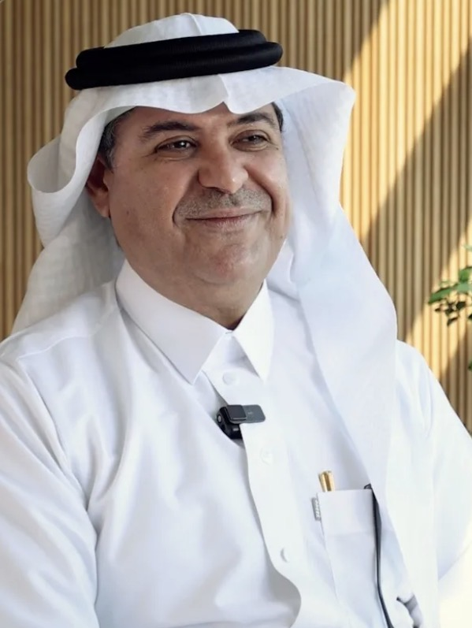

مقالات أعضاء هيئة التدريس ✍️
كل دكتور له قسمه الخاص هنا — نبدأ بمقالات د. هيثم لنجاوي، وراح نضيف دكاترة آخرين قريبًا.

د. هيثم حسن لنجاوي
دكتور في العلوم السياسية من جامعة هوارد الأمريكية، متخصص في النظرية السياسية والمناهج البحثية والسياسات المقارنة والاقتصاد السياسي العالمي، وشغل عدة مناصب أكاديمية بجامعة الملك عبدالعزيز منها رئاسة قسم العلوم السياسية.
تابعه على تيك توك ↗👀 حساب شخصي مستقل للدكتور، غير تابع رسميًا لـ مِدراك أو القسم.
⭐ مقالة اليوم
كل مقالات د. هيثم
© جميع حقوق هذه المقالات محفوظة للكاتب د. هيثم لنجاوي، ولا يجوز إعادة نشرها دون إذن.
مصادر ومقالات خارجية ذات صلة
العدالة الاجتماعية.. قبل «العولمة»..! — بقلم صدقة يحيى فاضل
مقالة رأي تناقش حدود تدخل الحكومات في النشاط الاقتصادي والاجتماعي، وموازنة ذلك مع متطلبات العولمة وتحقيق العدالة الاجتماعية.
قراءة المقالة كاملة في صحيفة عكاظ ↗فيديو ذو صلة
مشاهدة الفيديو على يوتيوب ↗